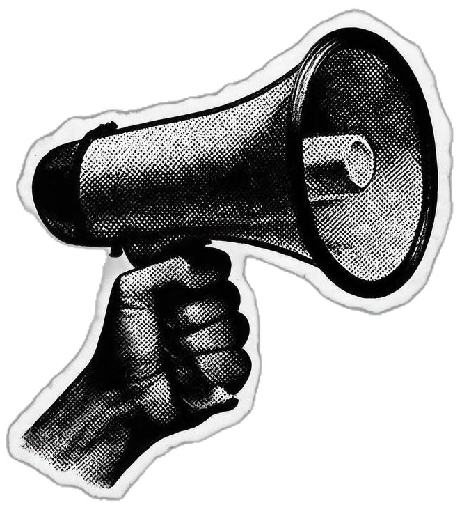
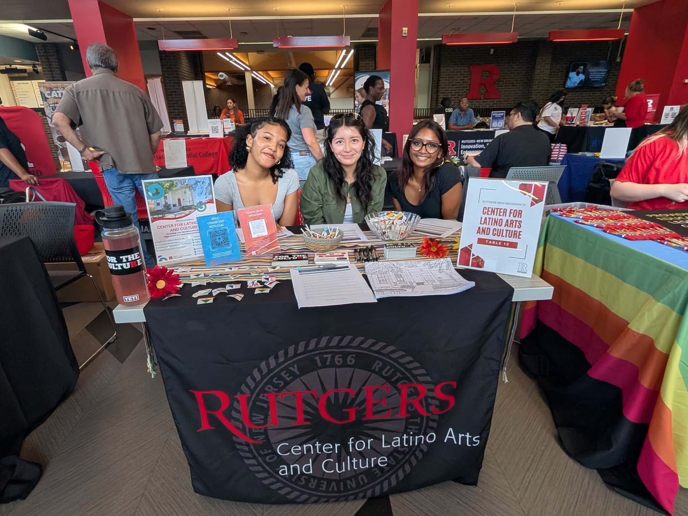
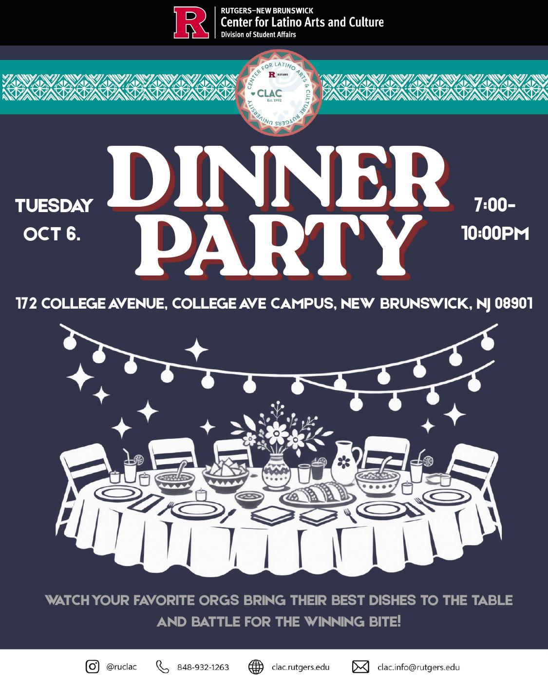
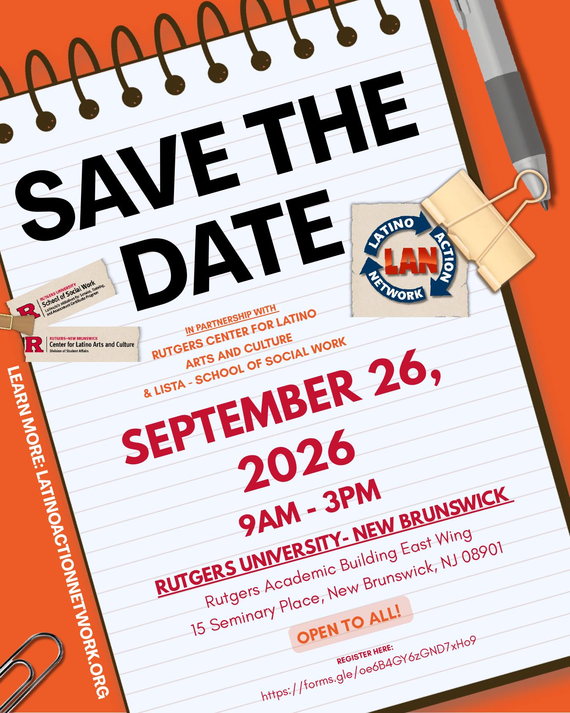
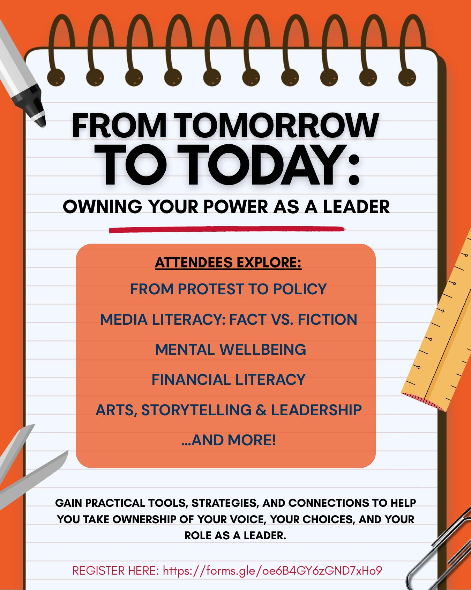

Event promotions
Designed social media and event graphics for CLAC programming including Open House and Dinner Party promotions.
RUTGERS / CENTER FOR LATINO ARTS AND CULTURE
COMMUNITY IN FULL COLORMarketing and communications work for Rutgers’ Center for Latino Arts and Culture: event graphics, room signage, orientation outreach, and the ongoing CLAC × LAN summit campaign.

Designing the invitation: campus campaigns, everyday signage, and real conversations that bring students into the CLAC community.



At CLAC, the work stretches beyond making graphics look polished. The visual system has to help students recognize events, understand where to go, and feel that the center is a real home away from home.
Designed social media and event graphics for CLAC programming including Open House and Dinner Party promotions.
Supported a coordinated CLAC room-signage system so visitors could move through the center with more clarity.
Helped bring the brand into in-person community work, meeting students where they were and collecting interest signatures.
orientation outreach with the CLAC team
THE CLAC COLLECTION
Event invitations and an everyday wayfinding system. Select any piece to look closer.
ROOM TO BELONG
A coordinated set of room signs carries the visual identity into the center itself.
HEAD OF MARKETING · CLAC × LAN YOUTH SUMMIT
Owning Your Power as a Leader.
As Head of Marketing for the CLAC × Latino Action Network youth summit, I lead the promotional strategy and create ways for emerging leaders to discover and engage with the event. The September 26, 2026 summit takes place at Rutgers Academic Building East Wing.
CAMPAIGN IN PROGRESS
Media & outreach / final outcomes pending


MANY CONVERSATIONS. SHARED POSSIBILITY.
LATEST WORKING AGENDA / SUBJECT TO CHANGE
Explore the interactive program agenda I designed ↗
“From Tomorrow to Today: Owning Your Power as a Leader” is being built as a day of leadership, advocacy, identity, wellbeing, and civic engagement — bringing young people into the same rooms as public leaders, advocates, artists, and community voices.
Arrival, welcome, and community check-in.
Opening legislative panel centered on Latino/a/x public leadership and representation in New Jersey.
Smaller rooms move from the big conversation into practical, participatory sessions.
A pause in the program for food, conversation, and community.
More focused sessions across advocacy, identity, wellness, immigration, and financial literacy.
The summit comes back together for a final shared conversation and closing remarks.
PROGRAM THREADS
OPENING CONVERSATION
The latest working agenda includes New Jersey elected and public leaders in the legislative conversation, including Assemblywomen Carmen Theresa Morales, Alixon Collazos-Gill and Annette Quijano; Assemblyman Gabriel Rodriguez; Secretary of Higher Education Margo Chaly; and Mayor Frank Velez.
Speaker participation and program details remain subject to change as the summit is finalized.
FROM THE BREAKOUT ROOMS
The advocacy session is designed to move participants beyond simply caring about an issue: small groups build an advocacy plan around a fictional scenario, then bring their ideas back to the room. Other sessions connect policy with mental wellbeing, immigration, the arts, financial literacy, and lived experience.
This section reflects the latest working agenda I received. Times, rooms, facilitators, and speaker participation may continue to change before the event.
This work connects visual design with the practical details of student engagement: a recognizable invitation, a clear room sign, and a conversation at the outreach table. The summit campaign is still in progress; final outcomes will follow the event.
next: public-health communications ↗{kind=link}
{kind=link}
{kind=link}
{kind=link}
{kind=link}
{kind=link}
{kind=link}